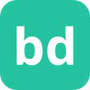
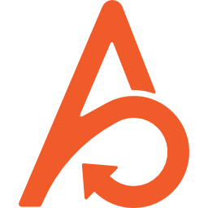

Planning and task tracking tools for coding agents
Planning boards and task trackers that coding agents can read and update. Of the 432 tools on our writing code page, 20 fit this narrower job. By pricing: 12 open source, 3 free or freemium, 4 paid, usage-based or enterprise, 1 pricing on the maker's site. The most-starred open repos here are Oh My OpenAgent (OmO) (70,324 stars), Vibe Kanban (28,446 stars), Beads (28,193 stars). Most come from the coding (13), app builders (3), personal agents (1) categories.
Oh My OpenAgent (OmO)
Agent harness add-on (OmO) for OpenCode and Pi that runs multi-model coding agent teams with memory, planning and parallel workflows.
Added
Vibe Kanban
Kanban board for planning and running tasks with Claude Code, Codex and other coding agents.
Added

Beads
Issue-tracking memory for coding agents so they can keep track of long-running work.
Added
Planning With Files
File-based planning for coding agents, keeping Markdown plans that survive crashes and session resets.
Added
agenticSeek
Fully local autonomous agent that browses, codes and plans without paid APIs.
Added
Agent Orchestrator
Runs and supervises teams of coding agents from planning to merge.
Added
Plannotator
Visually annotate and review coding-agent plans and diffs, then send feedback back to the agent.
Added
Backlog.md
Markdown task board in your Git repo for coordinating work between people and AI agents.
Added
Raven
Host agent that plans complex jobs as task graphs and coordinates built-in and third-party agents for research, coding, design and on-call work.
Added
LazyCodex
Agent harness for Codex that adds project memory, planning, execution and verified completion for complex codebases.
Added
Agent Teams
Free desktop app where teams of AI agents take tasks from a kanban board, message each other and review each other's work.
Added
Nimbalyst
Visual workspace for working with coding agents like Claude Code on docs, code and plans.
Added
Foremerge
Foremerge is an open-source coordination layer for teams of coding agents, built on top of Git. Each agent keeps its own worktree, but they share what they intend to change, claim the parts of the code they are working on and verify each other's change sets, so conflicting plans are caught before they turn into merge conflicts. It also works over MCP.
Added
1Password for Agents
1Password for Agents lets personal AI agents sign in to your accounts without ever seeing your passwords or one-time codes. When a supported agent reaches a sign-in page, it asks for a credential from your vault; you approve the request, and 1Password fills it straight into the site, so the secret never enters the model or its memory. You can see and manage which agents have access to what. It launched with integrations for agents such as Claude Duet, ChatGPT Work and dots, Meta's Muse and Grok Bot, and needs a 1Password plan.
Added

Agiloop
Agiloop is an AI-orchestrated software development platform that connects product requirements, architecture planning, AI coding, testing and production insights in one continuous loop, including a free Code Health and Readiness Assessment for existing repositories.
Added
Emergent
Vibe-coding platform where AI agents plan, build and deploy full web and mobile apps through a chat conversation.
Added
Empyre
Empyre turns a plain-language business brief into a running software company: eight AI agents (CEO, CTO, CMO, CFO and more) build it, deploy it to its own HTTPS address and keep operating it, shipping code, marketing and support with spend approval; plans $49, $149 and $299 a month.
Added
KaneAI
AI testing agent that plans, writes and evolves end-to-end tests from natural language.
Added
Massvai
Massvai is an AI full-stack app builder for Next.js, TypeScript, Tailwind CSS and Supabase. From a plain-language prompt or reference screenshot, its coding agent plans the architecture, writes exportable TypeScript code with a live HMR preview, wires Supabase authentication and database flows, syncs the repository to GitHub and deploys to Vercel.
Added
Verdent
AI coding agent that plans, codes and verifies tasks in parallel.
Added
GitHub repos (13)
| Repo | GitHub stars | Licence | Last push |
|---|---|---|---|
| Oh My OpenAgent (OmO) ↗ | 70,324 | — | 2026-10-25 |
| Vibe Kanban ↗ | 28,446 | Apache License 2.0 | 2026-09-19 |
| Beads ↗ | 28,193 | MIT | 2026-10-25 |
| Planning With Files ↗ | 27,635 | MIT | 2026-10-24 |
| agenticSeek ↗ | 27,539 | GNU GPL v3.0 | 2026-10-22 |
| Agent Orchestrator ↗ | 13,604 | Apache License 2.0 | 2026-10-25 |
| Plannotator ↗ | 9,625 | Apache License 2.0 | 2026-10-25 |
| Backlog.md ↗ | 7,149 | MIT | 2026-10-23 |
| Raven ↗ | 5,804 | — | 2026-10-25 |
| LazyCodex ↗ | 3,826 | MIT | 2026-10-25 |
| Agent Teams ↗ | 2,318 | — | 2026-10-25 |
| Nimbalyst ↗ | 1,972 | MIT | 2026-10-25 |
| Foremerge ↗ | 520 | — | 2026-10-25 |
13 repos. Stars and licence come from each repo, checked when the listing was last verified.
FAQ
What are the best AI tools for writing code focused on planning and task tracking?
We list 20. The first three by GitHub stars and featured status are Oh My OpenAgent (OmO): Agent harness add-on (OmO) for OpenCode and Pi that runs multi-model coding agent teams with memory, planning and parallel workflows.; Vibe Kanban: Kanban board for planning and running tasks with Claude Code, Codex and other coding agents.; Beads: Issue-tracking memory for coding agents so they can keep track of long-running work.
Are there free or open-source options?
Yes: 12 open source, 3 free or freemium, 4 paid, usage-based or enterprise, 1 pricing on the maker's site. Pricing is as each maker states it.
More from writing code
Tools are grouped by what each says it does. Missing one? Submit it free.